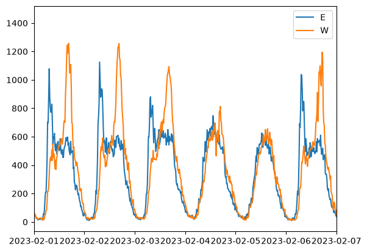
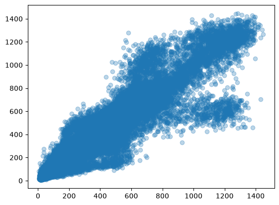
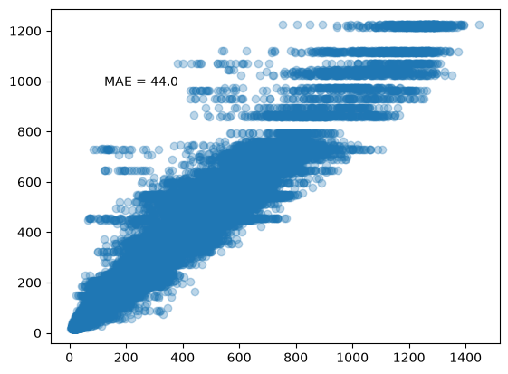
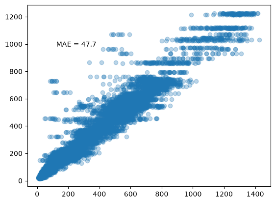
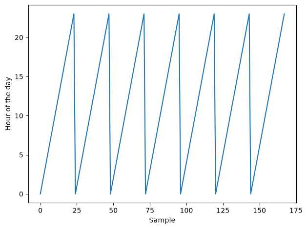

import pandas as pd
import numpy as np
import matplotlib.pyplot as plt
from sklearn.model_selection import train_test_splitTimeseries examples
df = pd.read_csv("glenmore_traffic.csv")
df.info()<class 'pandas.DataFrame'>
RangeIndex: 70080 entries, 0 to 70079
Data columns (total 3 columns):
# Column Non-Null Count Dtype
--- ------ -------------- -----
0 DIRECTION 70080 non-null str
1 STUDY_DATE 70080 non-null str
2 VOLUME 70080 non-null int64
dtypes: int64(1), str(2)
memory usage: 1.6 MB# convert the study date to datetime for plotting
df["STUDY_DATE"] = pd.to_datetime(df["STUDY_DATE"], format=r"%m/%d/%Y %I:%M:%S %p")for dir in ["E", "W"]:
this_dir = df[df["DIRECTION"] == dir]
plt.plot(this_dir["STUDY_DATE"], this_dir["VOLUME"], label=dir)
plt.legend()
# zoom in so we can see a bit more detail
plt.xlim(pd.to_datetime(["2023-02-01", "2023-02-7"]))
# autocorrelation?
shift = 24*4
t = df["VOLUME"][df["DIRECTION"] == "W"][shift:]
t_minus = df["VOLUME"][df["DIRECTION"] == "W"][:-shift]
plt.scatter(t, t_minus, alpha=0.3)
np.corrcoef(t, t_minus)array([[1. , 0.93789682],
[0.93789682, 1. ]])
# pull the date/month/time info out of the datetime object
def extract_date_features(df):
# return df[["STUDY_DATE"]].astype(int)
# df["DAY_OF_WEEK"] = df["STUDY_DATE"].dt.day_of_week # mapped Sunday = 0, Saturday = 6
df["DAY_OF_WEEK_C"] = np.cos(2*np.pi*df["STUDY_DATE"].dt.day_of_week / 7)
df["DAY_OF_WEEK_S"] = np.sin(2*np.pi*df["STUDY_DATE"].dt.day_of_week / 7)
# df["DAY_OF_MONTH"] = df["STUDY_DATE"].dt.day
# df["MONTH"] = df["STUDY_DATE"].dt.month
# df["TIME_HOUR"] = df["STUDY_DATE"].dt.hour
df["TIME_HOUR_C"] = np.cos(2*np.pi*df["STUDY_DATE"].dt.hour / 24)
df["TIME_HOUR_S"] = np.sin(2*np.pi*df["STUDY_DATE"].dt.hour / 24)
# df["TIME_MINUTE"] = df["STUDY_DATE"].dt.minute
return df.drop(columns="STUDY_DATE")# plt.scatter(extract_date_features(df), df["VOLUME"])# try a super basic model
from sklearn.preprocessing import FunctionTransformer
from sklearn.pipeline import make_pipeline
from sklearn.compose import make_column_transformer
from sklearn.preprocessing import OneHotEncoder, StandardScaler
from sklearn.model_selection import cross_val_score, TimeSeriesSplit
from sklearn.tree import DecisionTreeRegressor
# hold back the last 20% for testing
threshold = int(0.8 * len(df))
train_val, test = df[:threshold], df[threshold:]
# BIG MISTAKE! Can't randomly split time series data
# train, val = train_test_split(train_val, test_size=0.2, random_state=1234)
threshold = int(0.8 * len(train_val))
train, val = train_val[:threshold], train_val[threshold:]
pipeline = make_pipeline (
make_column_transformer(
(OneHotEncoder(drop="if_binary"), ["DIRECTION"]),
(FunctionTransformer(extract_date_features), ["STUDY_DATE"])
),
DecisionTreeRegressor(),
)
pipeline.fit(train, train["VOLUME"])Pipeline(steps=[('columntransformer',
ColumnTransformer(transformers=[('onehotencoder',
OneHotEncoder(drop='if_binary'),
['DIRECTION']),
('functiontransformer',
FunctionTransformer(func=<function extract_date_features at 0x0000028B4203C460>),
['STUDY_DATE'])])),
('decisiontreeregressor', DecisionTreeRegressor())])In a Jupyter environment, please rerun this cell to show the HTML representation or trust the notebook. On GitHub, the HTML representation is unable to render, please try loading this page with nbviewer.org.
Parameters
Fitted attributes
| Name | Type | Value |
|---|---|---|
| feature_names_in_ feature_names_in_: ndarray of shape (`n_features_in_`,) Names of features seen during :term:`fit`. Only defined if the underlying estimator exposes such an attribute when fit. .. versionadded:: 1.0 |
ndarray[object](8,) | ['DIRECTION','STUDY_DATE','VOLUME',...,'MONTH','TIME_HOUR','TIME_MINUTE'] |
| n_features_in_ n_features_in_: int Number of features seen during :term:`fit`. Only defined if the underlying first estimator in `steps` exposes such an attribute when fit. .. versionadded:: 0.24 |
int | 8 |
Parameters
Fitted attributes
['DIRECTION']
Parameters
Fitted attributes
1 feature
| DIRECTION_W |
['STUDY_DATE']
Parameters
Fitted attributes
Parameters
Fitted attributes
def predict_plot(df):
y_est = pipeline.predict(df)
plt.scatter(df["VOLUME"], y_est, alpha=0.3)
plt.text(0.1 * max(y_est), 0.8*max(y_est), f"MAE = {np.abs(df["VOLUME"] - y_est).mean():.1f}")
predict_plot(train)
# what about validation data?
predict_plot(val)
# Don't look at test data until the very end
# predict_plot(test)Supplemental figures
# encoding hours
hours = np.hstack([np.arange(24)]*7)
plt.plot(hours)
plt.xlabel("Sample")
plt.ylabel("Hour of the day")
plt.tight_layout()
# plt.savefig("../../img/12-hours.png")